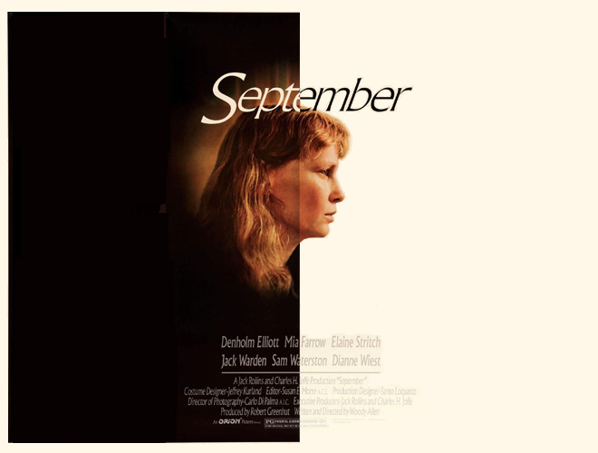
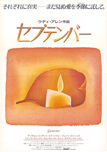

|
||||
September (1987) |
||||
 |
||||
Director |
- |
Woody Allen | ||
Producers |
- |
Robert Greenhut Jack Rollins Charles H. Joffe |
||
Screenplay |
- |
Woody Allen |
||
Cinematography |
- |
Carlo Di Palma | ||
Production Designer |
- |
Santo Loquasto | ||
Costume Designer |
- |
Jeffrey Kurland | ||
Editor |
- |
Susan E. Morse | ||
Cast |
||||
Howard |
- |
Denholm Elliott | ||
Stephanie |
- |
Dianne Wiest | ||
Lane |
- |
Mia Farrow | ||
Diane |
- |
Elaine Stritch | ||
Peter |
- |
Sam Waterston | ||
Lloyd |
- |
Jack Warden | ||
Mrs. Mason |
- |
Rosemary Murphy | ||
Mr. Raines |
- |
Ira Wheeler | ||
Mrs. Raines |
- |
Jane Cecil | ||
Plot |
||||
This sombre drama presents the events of the course of one weekend at a Vermont country house. Six upper-class men and women travel to the house for a brief retreat, during which their various romantic and emotional troubles dramatically rise to the surface. After a failed suicide attempt, Lane has moved into her country house to recuperate. Her best friend, Stephanie, has come to join her for the summer to have some time away from her husband. Lane's brassy, tactless mother, Diane, has recently arrived with her physicist husband, Lane's stepfather. Lane is close to two neighbours: Peter, a struggling writer, and Howard, a French teacher. Howard is in love with Lane, Lane is in love with Peter, and Peter is in love with Stephanie. |
||||
Filming |
||||
The film is modelled on Anton Chekhov's play Uncle Vanya and one of the main plot thrusts of September is taken from the life of Lana Turner, whose 14-year-old daughter, Cheryl Crane, killed Lana's gangster lover, Johnny Stompanato, in 1958. Allen shot the film twice. It originally starred Sam Shepard as Peter (after Christopher Walken shot a few scenes, but was determined not to be right for the role), Maureen O'Sullivan as Diane and Charles Durning as Howard. After editing the film he decided to rewrite it, recast it, and reshoot it. He has since stated he would like to remake it. Mia Farrow's Connecticut country house inspired Allen to write the screenplay with the intention that it would be shot at the house. Unfortunately, by the time Allen finished the screenplay, it was winter and the location was unusable for a movie so firmly planted in September. The entire movie (which takes place in Vermont) was therefore shot on a single soundstage at the Kaufman Astoria Studios in New York. At seven, this film tied the number of appearances made by Mia Farrow and Diane Keaton in Woody Allen films. |
||||
Quotes |
||||
"The Richmonds are flooded, electricity's gone off. God is testing us and I for one am gonna be prepared. Where's the vodka?" |
||||
Music |
||||
On a Slow Boat to China |
- |
Bernie Leighton | ||
Out of Nowhere |
- |
Ambrose and his Orchestra | ||
Just One More Chance |
- |
Ambrose and his Orchestra | ||
My Ideal |
- |
Art Tatum and Ben Webster | ||
What'll I Do |
- |
Bernie Leighton | ||
Who |
- |
Bernie Leighton | ||
I'm Confessin' (That I Love You) |
- |
Bernie Leighton | ||
Moonglow |
- |
Bernie Leighton | ||
When Day is Done |
- |
Bernie Leighton | ||
Night and Day |
- |
Art Tatum and Ben Webster | ||
Reviews |
||||
"September is a difficult, sombre, but above all, truthful portrayal of the everyday sadness of adult life." - Christopher Machell : CineVue "One of Woody Allen's weakest, most static films, inspired by Ingmar Bergman's serious dramas on the one hand and by Lana Turner's scandalous life on the other." - Emanuel Levy |
||||
Additional Artwork |
||||
 |
||||